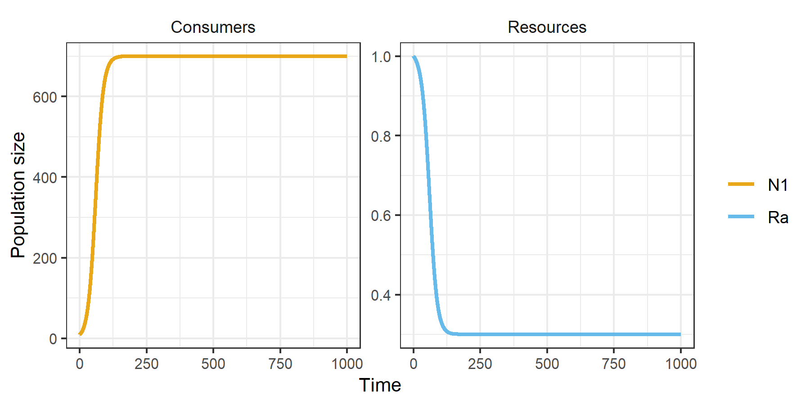
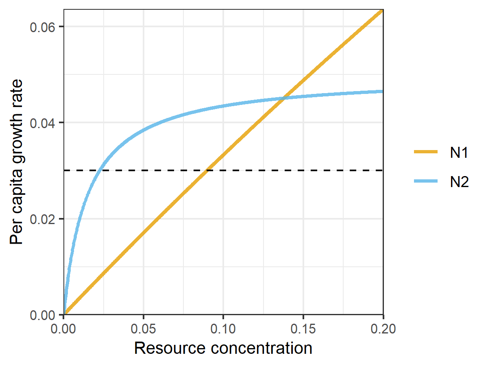

rescomp is an R package that supports the definition, simulation and visualization of ODE models of ecological consumer-resource interactions. In essence, it is a consumer-resource modelling focused interface to the excellent deSolve package.
Installation
You can install rescomp from GitHub with:
# install.packages("devtools")
devtools::install_github("andrewletten/rescomp")Example
The primary user function in rescomp is spec_rescomp(), which facilitates: i) the definition and parameterisation of a desired consumer-resource model, and ii) the specification of simulation parameters. The default output from spec_rescomp() is a list defining a model for a single type I consumer (linear functional response) and a single continuously supplied resource (e.g., in a chemostat).
pars <- spec_rescomp()plot_funcresp() plots the functional response for easy visualistion prior to running a simulation.
plot_funcresp(pars)
The model is then simulated via sim_rescomp() (effectively a wrapper for deSolve::ode() with convenient defaults).
m1 <- sim_rescomp(pars)Output dynamics can be visualised with plot_rescomp().
plot_rescomp(m1)
Note, the core rescomp functions are compatible with pipes. For example spec_rescomp() |> sim_rescomp() |> plot_rescomp() will output the plot above.
The main utility of rescomp comes with specifying more elaborate models and simulation dynamics. Features/options include (but are not limited to):
- Unlimited number of consumers/resources
- Consumer functional response (type I, II or III)
- Resource dynamic (chemostat, logistic and/or pulsed)
- Resource type (substitutable or essential)
- Continuous or intermittent mortality (e.g. serial transfer)
- Time dependent growth and consumption parameters
- Delayed consumer introduction times
See ?spec_rescomp for all argument options.
The following two examples demonstrate how to build and simulate a model for: i) two consumers with type II functional responses on a single logistically growing resources; and ii) two consumers with type III functional responses with pulsed resources and time dependent growth parameters. A wide range of other examples can be found in the package vignettes.
Example 1
pars <- spec_rescomp(
spnum = 2,
resnum = 1,
funcresp = funcresp_monod(
mumax = crmatrix(0.7, 0.05),
ks = crmatrix(2, 0.015)
),
rinit = 0.2,
ressupply = ressupply_logistic(
r = 3,
k = 0.2
),
totaltime = 2000
)
plot_funcresp(pars, maxx = 0.2)
m2 <- sim_rescomp(pars)
plot_rescomp(m2)
Example 2
pars <- spec_rescomp(
spnum = 2,
resnum = 2,
funcresp = funcresp_hill(
mumax = rescomp_coefs_lerp(
crmatrix(
0.2, 0.1,
0.5, 0.3
),
crmatrix(
0.4, 0.1,
0.05, 0.02
),
"env_state"
),
ks = crmatrix(1),
n = crmatrix(2)
),
params = rescomp_param_list(
env_state = rescomp_param_square(period = 80)
),
ressupply = ressupply_constant(0),
events = list(
event_schedule_periodic(
event_res_add(1),
period = 40
)
),
totaltime = 1000
)
plot_funcresp(pars, maxx = 1)
m3 <- sim_rescomp(pars)
plot_rescomp(m3)